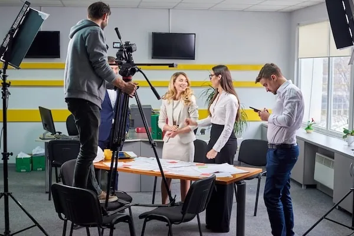

Selected work that helps buyers evaluate fit, scope, and execution standard.
Selected Work
This page is designed to show the kinds of projects Maite Media supports in Paraguay, how that work can be organized, and what prospective clients should pay attention to when reviewing it.
Selected work should help buyers judge fit quickly
A strong work page should help buyers quickly understand what kinds of projects Maite Media supports, what production conditions those projects involve, and whether the company feels like a credible fit for the brief they are planning.
What this page should make clear
Selected work should prioritize relevance, clarity, and usefulness over volume. The goal is not to show everything. The goal is to help buyers identify scope, context, and relevance quickly.
Suggested project categories
- Corporate Video
- Event Video Production
- Live Streaming
- Nonprofit & Institutional Content
- Production Support
- Drone-Based Visuals

How buyers should evaluate selected work
Even when not every project can be shown in full detail, the page should make the evaluation framework explicit instead of leaving buyers to guess.
What matters most
- The type of brief the work appears to support
- Whether the production feels aligned with the intended audience
- The level of structure behind the execution
- Whether the visual standard matches the project type
- Whether the work feels suitable for corporate, agency, institutional, or production company use
Looking for relevant production experience in Paraguay?
Tell us what kind of project you are planning, and we will point you to the most relevant work category or service path.